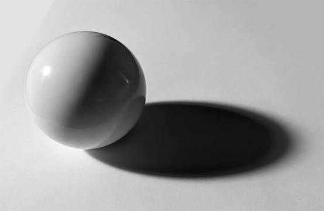

การลงเส้น สี และแสงเงา
3.1) เป็นองค์ประกอบพื้นฐานสำคัญทางทัศนศิลป์ที่ช่วยเน้นรูปร่าง สร้างมิติ และถ่ายทอดอารมณ์ของภาพ การลงเส้น (Line Work): การใช้เส้นกำหนดโครงสร้าง รูปร่าง และทิศทาง น้ำหนักเส้นที่หนัก-เบาต่างกันช่วยสร้างระยะความลึกและความใกล้ไกลของวัตถุ การลงสี (Coloring): การใช้โทนสีถ่ายทอดอารมณ์ บรรยากาศ และคุณลักษณะของวัตถุ การตัดกันหรือกลมกลืนของสีช่วยสร้างจุดสนใจให้ผลงาน การลงแสงเงา (Shading & Lighting): การกำหนดทิศทางแสงเพื่อสร้างเงาตกกระทบ ช่วยเปลี่ยนภาพ 2 มิติที่แบนราบให้ดูมีความหนา ตื้น ลึก และมีมิติแบบ 3 มิติ